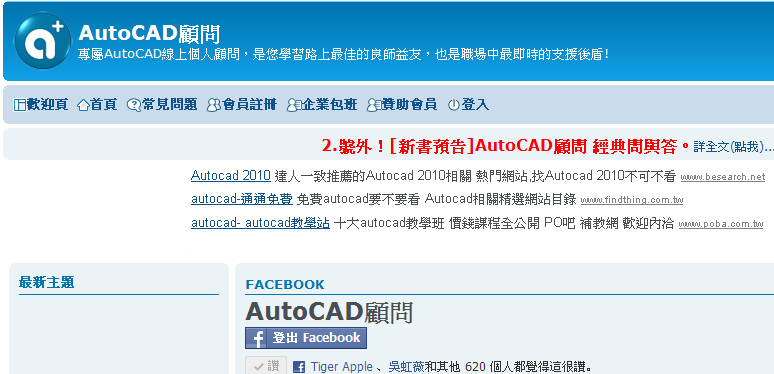

大家好：
對於爬文章的時候常常會被「廣告文章」版面影響閱讀品質，在這分享一個好消息給每天造訪論壇的「訪客」朋友們！
*訪客未登入會有廣告文：

現在我有向官網付費申請「取消廣告」會員服務，只要是擁有論壇「論壇會員身份」，並且正常登入論壇後，日後爬文章時就不用再看到惱人的廣告文章囉～
*會員登入後就不會有廣告文：

而且加入後您只要撥空完成「升等一般會員」任務，即可回覆文章或下載一般版區，論壇中無私熱心的會員朋友分享的資源，訪客朋友們你還在等什麼啊，趕快來加入註冊吧～
[新手請進]升等辦法:回覆規定五篇文章，立即升等一般會員!!